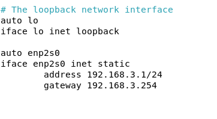
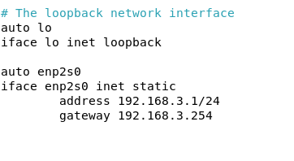
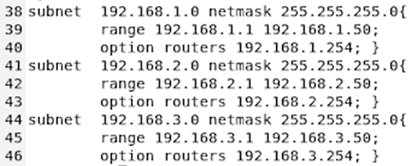
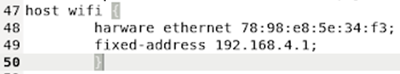
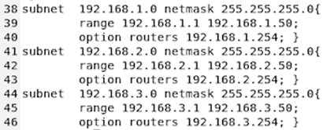
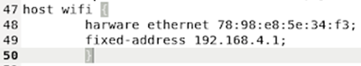

Installation d'un service DHCP
Mise en place du serveur sur le réseau
Afin de configurer l’interface souhaitée en direction du switch nous allons dans nano /etc/network/interfaces
On met cette configuration afin d’avoir accès au réseau du vlan.


Pour que la configuration soit prise en compte on redémarrer le service avec systemctl restart networking
Configuration
Pour commencer nous allons dans nano /etc/default/isc-dhcp-server pour configurer l'interface d'écoute du serveur
Nous mettons l'interface ens19 en écoute :
INTERFACESv4= « ens19 »
INTERFACESv4= « ens19 »
Puis dans le fichier de configuration du serveur nano /etc/dhcp/dhcpd.conf nous ajoutons les différentes plages d’adresses pour les différents vlan ainsi que leur passerelles respective.
Les plages d'adresse pour les vlan 100,200 et 300

Pour le point d'accès wifi qui est seul dans le vlan 400 nous lui attribuons une ip fixe par rapport à son adresse MAC

Dans le même fichier on remplace les lignes de DNS par le bon DNS :
option domain-name-servers 192.168.3.2;

Pour le point d'accès wifi qui est seul dans le vlan 400 nous lui attribuons une ip fixe par rapport à son adresse MAC

Dans le même fichier on remplace les lignes de DNS par le bon DNS :
option domain-name-servers 192.168.3.2;
Pour finir, on redémarre le serveur DHCP avec systemctl restart isc-dhcp-server
Maintenant, le serveur DHCP est mis en place et les machines vont pouvoir recevoir leur configuration de façon automatiques